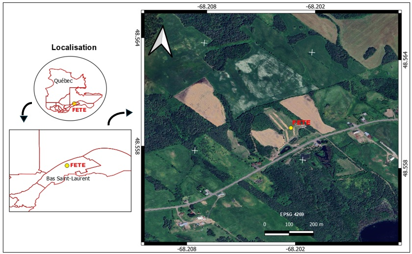

Application of Computer Vision in Grapevine Phenology Monitoring - under construction!!!!!Application de Computer vision dans le suivi de la phenology de las vignes - under construction!!!!!Aplicacion de Vision por ordenador en el monitoreo de vinedos - en construccion!!!
ContextContexteContexto
For the completion of the Master of Science (M.Sc.) degree in Applied Geomatics and Remote Sensing, I conducted the study: Development of an Automatic Detection Model for Grapevine Phenological Stages Using YOLOv9/YOLOv11: A Case Study on an Experimental Vineyard in Quebec.
The study was carried out at the Terre-Eau experimental vineyard (FETE), located in the Bas-Saint-Laurent region, where RGB images were collected between May and September 2024 using smartphones, a tablet, and a drone.
After filtering, a dataset of 1,002 images was created to train and compare several YOLO models applied to the Radisson and St-Pépin grape varieties, two cultivars adapted to Quebec’s cold climate.
This experimental framework made it possible to evaluate the robustness of the models under real field conditions and with heterogeneous data. Pour l’obtention du grade de Maître ès sciences (M. Sc.) en géomatique appliquée et télédétection, j'ai réalisé l'étude: Développement d’un modèle de détection automatique des stades phénologiques de la vigne à l’aide de YOLOv9/YOLOv11 : étude sur un vignoble expérimental au Québec.
L’étude a été menée dans le vignoble expérimental Terre‑Eau (FETE), situé au Bas‑Saint‑Laurent, où des images RGB ont été collectées entre mai et septembre 2024 à l’aide de téléphones, d’une tablette et d’un drone.
Après filtrage, un jeu de données de 1002 images a été constitué pour entraîner et comparer plusieurs modèles YOLO appliqués aux cépages Radisson et St‑Pépin, deux variétés adaptées au climat froid du Québec. Ce cadre expérimental a permis d’évaluer la robustesse des modèles dans des conditions réelles de terrain et sur des données hétérogènes.
Para la obtención del grado de Maestría en Ciencias (M. Sc.) en Geomática Aplicada y Teledetección, realicé el estudio: Desarrollo de un modelo de detección automática de los estados fenológicos de la vid utilizando YOLOv9/YOLOv11: estudio en un viñedo experimental en Quebec.
El estudio se llevó a cabo en el viñedo experimental Terre-Eau (FETE), ubicado en la región de Bas-Saint-Laurent, donde se recolectaron imágenes RGB entre mayo y septiembre de 2024 utilizando teléfonos móviles, una tableta y un dron.
Después del filtrado, se conformó un conjunto de datos de 1002 imágenes para entrenar y comparar varios modelos YOLO aplicados a las variedades de vid Radisson y St-Pépin, dos cultivares adaptados al clima frío de Quebec.
Este marco experimental permitió evaluar la robustez de los modelos en condiciones reales de campo y sobre datos heterogéneos.

Localisation de la Ferme expérimentale Terre-Eau (FETE) à Saint-Joseph-de-Lepage.
Objective
L’objectif principal de cette recherche est de développer une méthodologie basée sur l’application de la vision par ordinateur afin d’optimiser le suivi des principaux stades phénologiques de la vigne, en réduisant les coûts économiques et le coût en temps. Cette méthodologie comprend la mise en place d’un prototype de comptage des grappes, un outil qui pourrait être amélioré pour calculer le rendement des vignobles et déployé pour un usage en temps réel. Le système proposé pourrait également être adapté à l’analyse des fleurs et des inflorescences.
ToolsOutilsHerramientas
Logiciels et plateformes
* YOLOv9 GELAN‑C et YOLOv11 (n, s) de Ultralytics
* Python, PyTorchOpenCV pour le prétraitement
* Logiciel LabelImg pour l’annotation
* Google Colab / GPU pour l’entraînement
Logiciel QGIS
Appareils utilisés:
Téléphones mobiles, drone, tablette, caméra reflex
Logiciels et plateformes
* YOLOv9 GELAN‑C et YOLOv11 (n, s) de Ultralytics
* Python, PyTorchOpenCV pour le prétraitement
* Logiciel LabelImg pour l’annotation
* Google Colab / GPU pour l’entraînement
Logiciel QGIS
Appareils utilisés: Téléphones mobiles, drone, tablette, caméra reflex
Programas y Plataformas
* YOLOv9 GELAN‑C et YOLOv11 (n, s) de Ultralytics
* Python, PyTorchOpenCV para el tratamiento
* Logiciel LabelImg pour la anotation
* Google Colab / GPU para el entrenamiento
Programa QGIS
Aparatos utilisados:
Téléfonos mobiles, drone, tableta, camara reflex
TasksTâchesTareas
* Acquisition, filtering, and classification of RGB images
* Data preprocessing
* Construction of a balanced dataset (train/validation)
* Annotation of grape clusters and phenological stages
* Calibration and comparison of YOLO models (epochs, batch size)
* Performance evaluation (precision, recall, mAP50-95)
* Development of an automatic grape cluster counting prototype
* Analysis of results and validation on different grape varieties
* Acquisition, filtrage et classification des images RGB
* Pré-traitement des données
* Construction d’un dataset équilibré (train/validation)
* Annotation des grappes et stades phénologiques
* Calibration et comparaison des modèles YOLO (époques, batch size)
* Évaluation des performances (precision, recall, mAP50‑95)
* Développement d’un prototype de comptage automatique des grappes
* Analyse des résultats et validation sur différents cépages
* Adquisición, filtrado y clasificación de imágenes RGB
* Preprocesamiento de datos
* Construcción de un dataset balanceado (entrenamiento/validación)
* Anotación de racimos y estados fenológicos
* Calibración y comparación de modelos YOLO (épocas, batch size)
* Evaluación del rendimiento (precision, recall, mAP50-95)
* Desarrollo de un prototipo de conteo automático de racimos
* Análisis de resultados y validación en diferentes variedades de vid